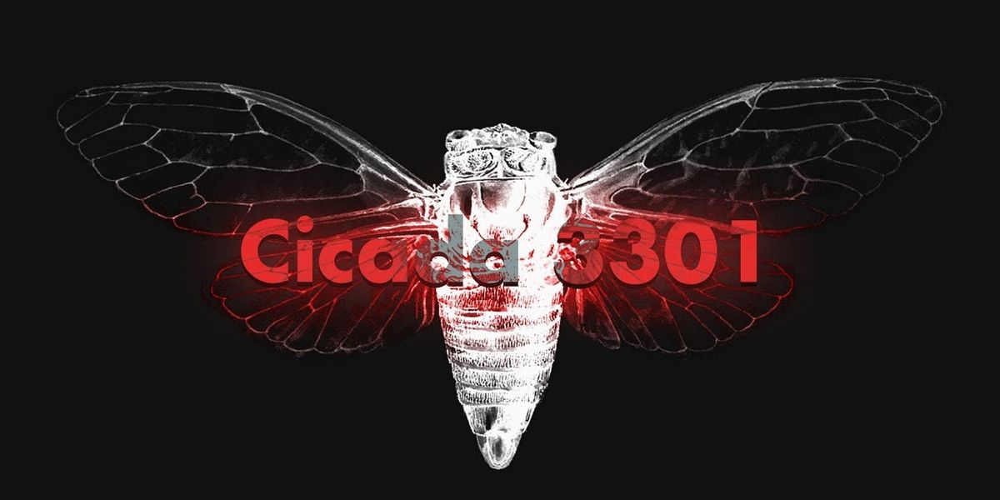
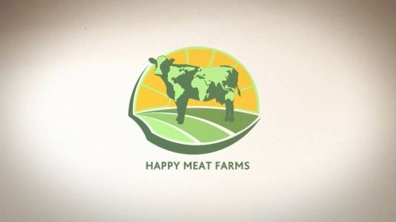
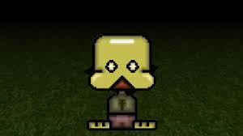

Los ARG (Juegos de Realidad Alternativa) son narrativas interactivas que utilizan el mundo real como plataforma, a menudo empleando una combinación de medios digitales y analógicos. Su influencia en el terror analógico es crucial, ya que enseñaron a la audiencia a "buscar las pistas" en la oscuridad, decodificar mensajes ocultos y tratar la ficción como si fuera un evento real y en curso. El Terror Analógico toma de los ARG la noción de una historia fragmentada, oculta y en expansión que se siente peligrosamente cercana a la verdad, exigiendo la participación activa del espectador para desentrañar el horror.

Cicada 3301
Cicada 3301 es el nombre de una serie de acertijos complejos publicados en internet entre 2012 y 2014 por un grupo anónimo.

Happy Meat farms
Happy Meat Farms es una historia de horror corporativo y manipulación genética disfrazada de progreso industrial. A través de una estética analógica y documentos internos perturbadores, el ARG revela una pesadilla detrás de una empresa de biotecnología que promete alimentar al mundo.

Petscop
Petscop es una historia de horror surrealista disfrazada de gameplay retro, donde un juego perdido para PlayStation revela secretos familiares, traumas infantiles y una dimensión oculta que no debería existir.